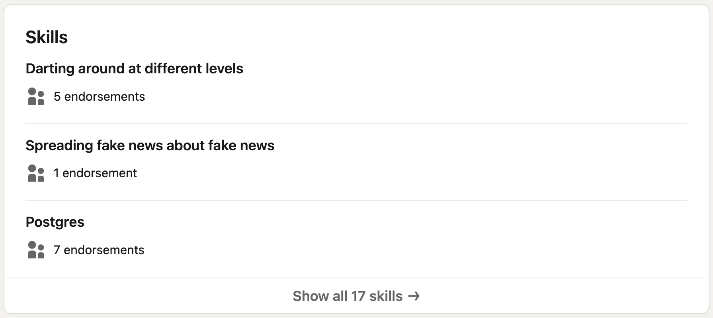
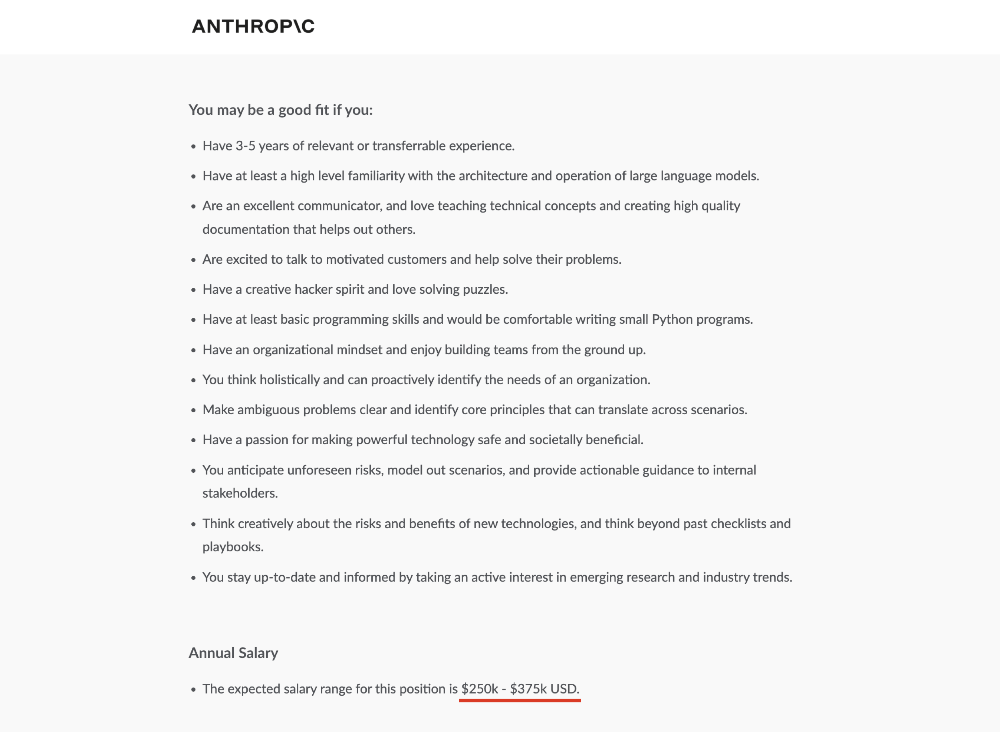
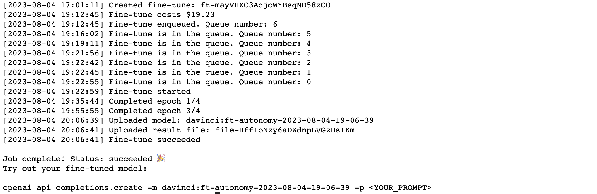
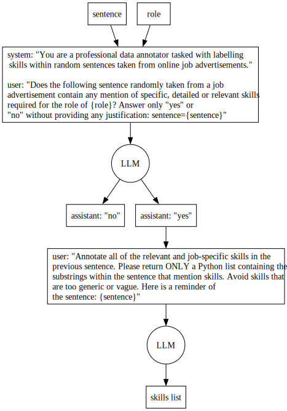
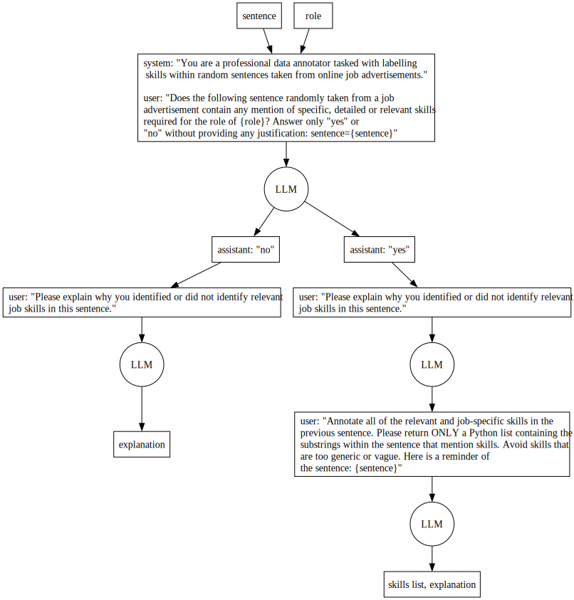

Skills extraction is a well explored task in natural language processing often applied to job ads and employment data to quantify the supply and demand of skills within a population. Skills extraction can help authorities aquire rich localised labour market data to inform policy. Such data can play an important role in planning for transitions such as ensuring the UK has the neccessary skills in place to retrofit the nation’s housing stock to meet net-zero targets. Having the right composition of skills can mitigate the negative impacts of skills mismatches which can occur in both a surplus of skills, such as too many university graduates looking for high-quality roles, as well as shortages in skills like the supposed dearth of UK tech talent in 2023.
In this post we will test drive some recent approaches to skills extraction using large language models. We prioritise approaches that are accessible, relatively low cost and can be tested fairly quickly. We are motivated by existing work applying LLMs to skills extraction such as Nesta’s taxonomies of UK skills.
1. Token Classification
Skills extraction can be approached as a named entity recognition task where we train models to label sequences of words that correspond to skills. This approach does require quality labelled datasets that can be time-consuming to build and difficult to source. The highest quality open dataset with skill annotations that we could get our hands on is ‘Skillspan’ from Zhang et al. (2022) consisting of 265 annotated English language job profiles (14.5K sentences and over 12.5K annotated spans) for hard and soft skills. This excellent resource is released alongside a codebase and paper ‘SkillSpan: Hard and Soft Skill Extraction from Job Postings’ in which the researchers report performance benchmarks for several transformer models fine-tuned on SkillSpan. Furthermore, the paper includes the extensive annotation guidelines used by the researchers to label the SkillSpan dataset, giving an insight into how time-consuming this task most likely was.
The data in SkillSpan is seperated into sentences labelled in the CoNNL format which looks like this:
| Word | Skill |
|---|---|
| The | O |
| candidate | O |
| should | O |
| be | O |
| competant | O |
| programming | B-Skill |
| in | I-Skill |
| Python | I-Skill |
| , | O |
| mentoring | B-Skill |
| junior | I-Skill |
| collegues | I-Skill |
| and | O |
| presenting | B-Skill |
| to | I-Skill |
| leadership | I-Skill |
Words are labelled ‘O’ if they are not part of a skill. The first word in a skill sequence is labelled B-Skill (b for beginning) and all proceeding words labelled I-Skill.
When shopping for model architectures that might yield the best performance when fine-tuned on SkillSpan, we could look to roughly comparable datasets such as CoNLL 2003 and recent performance benchmarks. Models building on the BERT/RoBERTa architectures seem to do particularly well at entity recognition. This is because they are designed for bidirectional context understanding; understanding a word or phrase in the context of all the other words and phrases that surround it in a sentence. This is different to models like GPT-3/GPT-4 which are designed for unidirectional context understanding (left-to-right) which makes them excellent at generating human-like text but less effective at entity extraction out-the-box. We will attempt to benchmark SkillSpan on BERT and RoBERTa to see how feasible it is to fine-tune excellent skill extractors on consumer hardware with open data.
Training and Testing
We attempt to fine-tune BERT and RoBERTa on part of the SkillSpan dataset and compare performance with ‘JobBert’, a model released by the SkillSpan researchers pre-trained on 3.2M unlabeled job profile sentences. We fine-tuned our models on a V100 GPU (P3.2xlarge AWS EC2 instance) using a basic NBDev workflow. To access performance of the models, we evaluate them on the two open SkillSpan test sets known as HOUSE and TECH (comprised of job profiles from StackOverflow):
| Model/Dataset | Precision (HOUSE) | Recall (HOUSE) | F1 (HOUSE) | Accuracy (HOUSE) | Precision (TECH) | Recall (TECH) | F1 (TECH) | Accuracy (TECH) |
|---|---|---|---|---|---|---|---|---|
| BERT | 46.26 | 45.90 | 46.08 | 93.50 | 48.41 | 53.17 | 50.68 | 94.91 |
| RoBERTa | 55.94 | 49.05 | 52.27 | 93.84 | 57.98 | 54.04 | 55.94 | 95.24 |
| JobBERT | 52.22 | 53.79 | 52.99 | 94.45 | 50.22 | 50.33 | 50.27 | 94.96 |
We notice a clear difference in performance between the subsets with RoBERTa outperforming on TECH and RoBERTa/JobBert performing better than BERT on HOUSE. RoBERTa achieves higher precision on both sets; getting a greater proportion of it’s labels correct. RoBERTa’s optimizations relative to JobBERT/BERT include training on a larger corpus of text and the use of dynamic masking which may have contributed to tangible improvements over the original BERT architectures. Differences in performance between JobBERT and BERT may be due to JobBERT being trained on a more relevant dataset of job profiles and fine-tuned on the full SkillSpan dataset compared to the 2 open-source subsets of SkillSpan our models were fine-tuned on.
To get a sense of how these models perform on job ads we might scrape from the internet in the future, we can test them on an example. Lets check out an ad for an SF-based role in the emerging economically lucractive discipline of so-called prompt engineering:

We can easily load our trained models from the Hugging Face Hub and test them on the full job profile by feeding each sentence to the model individually (similar to how the model was trained). We then print all the sentences where words were labelled. RoBERTa generated the following labels:
from transformers import pipeline
token_classifier = pipeline(
"token-classification", model="autosyrup/roberta", tokenizer="autosyrup/roberta",
ignore_labels=['O']
)You will figure out the best methods of prompting our AI to accomplish a wide range of tasks, then document these methods to build up a library of tools and a set of tutorials that allows others to learn prompt engineering, as well as work with high value partners to directly solve their challenges.
Responsibilities: Discover, test, and document best practices for a wide range of tasks relevant to our customers.
Build up a library of high quality prompts or prompt chains to accomplish a variety of tasks, with an easy guide to help users search for the one that meets their needs.
Build a set of tutorials and interactive tools that teach the art of prompt engineering to our customers.
Work with large enterprise customers on their prompting strategies.
Are an excellent communicator, and love teaching technical concepts and creating high quality documentation that helps out others.
Are excited to talk to motivated customers and help solve their problems.
Have a creative hacker spirit and love solving puzzles.
Have at least basic programming skills and would be comfortable writing small Python programs.
Have an organizational mindset and enjoy building teams from the ground up.
You think holistically and can proactively identify the needs of an organization.
Make ambiguous problems clear and identify core principles that can translate across scenarios.
You anticipate unforeseen risks, model out scenarios, and provide actionable guidance to internal stakeholders.
Think creatively about the risks and benefits of new technologies, and think beyond past checklists and playbooks.
You stay up-to-date and informed by taking an active interest in emerging research and industry trends.
We can see RoBERTa has identified 24 skills in 15/59 sentences that make up the job ad. The results seem sensible and cover almost all of the skills we might identify in the original ad. We can test the similarly capable JobBERT model to see how it compares with RoBERTa:
token_classifier = pipeline(
"token-classification", model="jjzha/jobbert_skill_extraction", tokenizer="jjzha/jobbert_skill_extraction",
ignore_labels=['O']
)You will figure out the best methods of prompting our AI to accomplish a wide range of tasks, then document these methods to build up a library of tools and a set of tutorials that allows others to learn prompt engineering, as well as work with high value partners to directly solve their challenges.
Responsibilities: Discover, test, and document best practices for a wide range of tasks relevant to our customers.
Build up a library of high quality prompts or prompt chains to accomplish a variety of tasks, with an easy guide to help users search for the one that meets their needs.
Build a set of tutorials and interactive tools that teach the art of prompt engineering to our customers.
Work with large enterprise customers on their prompting strategies.
Are an excellent communicator, and love teaching technical concepts and creating high quality documentation that helps out others.
Are excited to talk to motivated customers and help solve their problems.
Have a creative hacker spirit and love solving puzzles.
Have at least basic programming skills and would be comfortable writing small Python programs.
Have an organizational mindset and enjoy building teams from the ground up.
You think holistically and can proactively identify the needs of an organization.
Make ambiguous problems clear and identify core principles that can translate across scenarios.
You anticipate unforeseen risks, model out scenarios, and provide actionable guidance to internal stakeholders.
Think creatively about the risks and benefits of new technologies, and think beyond past checklists and playbooks.
As such, we greatly value communication skills.
Both models label the same 14 sentences out of the 59 that make up the job profile, only differing on several labels. If we include BERT’s inference results, there are at least 26 common spans labelled by 2 of the 3 models:
{'Build a set of tutorials and interactive tools',
'Build up a library of high quality prompts or prompt chains',
'Discover, test, and document best practices',
'Make ambiguous problems clear',
'Think creatively about the risks and benefits of new technologies',
'Work with large enterprise customers',
'accomplish a variety of tasks',
'anticipate unforeseen risks',
'building teams from the ground up',
'communicator',
'creating high quality documentation',
'creative hacker spirit',
'helps out others',
'identify core principles',
'model out scenarios',
'organizational mindset',
'proactively identify the needs of an organization',
'programming',
'provide actionable guidance',
'solving puzzles',
'taking an active interest in emerging research and industry trends',
'talk to motivated customers',
'teaching technical concepts',
'think holistically',
'work with high value partners',
'writing small Python programs'}This list of commonly labelled spans suggests it can be advantageous aggregating the inference results from multiple models in a pipeline to filter out some of the lower quality labels (in this case labels like build or the unfinished Think creatively about the risks and benefits of new).
Whilst auto-encoding transformer models like BERT are theoretically best suited for skills extraction, lets now explore how we can fine-tune and prompt auto-regressive models like GPT-3/GPT-4 into labelling skills.
2. Fine-tuning GPT-3
At present their are two approaches to guiding OpenAI’s LLMs towards a user-defined task: prompt design and fine-tuning. Prompt design is more accessible; it doesn’t neccesarily require a dataset, data preprocessing or interaction via API. Fine-tuning however can lead to potentially higher quality results and allows us to save costs on inference by removing the need to repeatedly waste tokens explaining the task or desired output format to a model via elaborate or sprawling prompts. Fine-tuning is also pretty straightforward and not very expensive as we will demonstrate.
Compared to the fine-tuning we previously conducted with BERT, fine-tuning GPT-3 is easier. We don’t need to specify the task, select the best model architecture (other than which version of GPT-3 to fine-tune: davinci, ada, babbage or curie) or install anything (other than the openai python package). We just need to provide a dataset and optional hyper-parameters via the OpenAI API. Through few shot learning LLMs can infer the task we are training them for, which in the case of entity extraction is similar to language transformation tasks.
To prepare our dataset for fine-tuning OpenAI recommends we build a .jsonl file with each line containing a sentence from SkillSpan with the sentence as the value for ‘prompt’ and the labels (seperated with line break characters \n) as the values for ‘completion’ like so:
{
"prompt": "You will be doing this by finding the right partners and building a program to acquire new customers for these markets Develop global partnerships with leading European and South African wineries\n\n###\n\n",
"completion": " finding the right partners\nbuilding a program\naquire new partners\nDevelop global partnerships END"
}We adapt SkillSpan to .jsonl and train Davinci (the most pricey model) on the dataset. Fine-tuning with SkillSpan cost $20 and took just less than 1 hour:

Once the model is trained, we could easily test on an example sentence, such as Ability to debug issues in a full stack environment, making sure to include some of the formatting quirks OpenAI recommended we included in the training data (like starting prompts with whitespace and ending with \n\n####\n\n):
openai.Completion.create(
model="davinci:ft-autonomy-2023-08-04-19-06-39",
prompt=" Ability to debug issues in a full stack environment\n\n###\n\n",
stop=[" END"])<OpenAIObject text_completion id=cmpl-7m5StSLE9WRXTxwUCYllioHchjREs> JSON: {
"id": "cmpl-7m5StSLE9WRXTxwUCYllioHchjREs",
"object": "text_completion",
"created": 1691695107,
"model": "davinci:ft-autonomy-2023-08-04-19-06-39",
"choices": [
{
"text": " debug issues in a full stack environment",
"index": 0,
"logprobs": null,
"finish_reason": "stop"
}
],
"usage": {
"prompt_tokens": 13,
"completion_tokens": 7,
"total_tokens": 20
}
}In our testing, fine-tuned GPT-3 correctly labelled debug issues in a full stack environment.
Despite the model labelling this result correctly, it is still vulnerable to returning text that doesn’t match any substrings within the input sentence. GPT-3 is not deterministic (like BERT) so we could in theory get a different result each time. The fine-tuned model can return results containing capital letters, punctuation and even words that didn’t occur in the input sentence- in other words partially hallucinated skills. We notice this can happen more frequently when setting the optional temperature parameter higher (values between 0.0 and 2.0), which corresponds with the model attempting to be more ‘creative’ in its output at the expense of being deterministic and focussed.
We apply post-processing steps on the output text, converting it to a list of labels and then attempting to find the index range in the original sentence where the label occurs. For instances where an exact match cannot be found we use an implementation of the Ratcliff/Obershelp algorithm to perform fuzzy matching. By matching GPT-3’s labels with the original sentences we can actually score the Davinci model using seqeval. We report the following metrics:
| Model/Dataset | Precision (HOUSE) | Recall (HOUSE) | F1 (HOUSE) | Precision (TECH) | Recall (TECH) | F1 (TECH) |
|---|---|---|---|---|---|---|
| Davinci (GPT-3) | 46 | 34 | 39 | 48 | 40 | 44 |
It is surprising and impressive to see GPT-3 is able to perform this task with any competancy, achieving similar precision to BERT, given that the model is inferring the task entirely from the dataset and is approaching token classification as sequence prediction.
If we test fine-tuned GPT-3 on the original ‘Prompt Engineer’ job posting we notice the model does identify some of the same labels as the BERT models but also misses a number of key skills and labels incompletely (active, provide, accomplish a and build up are some of the more lacklustre labels):
However, large language models are a new type of intelligence, and the art of instructing them in a way that delivers the best results is still in its infancy — it’s a hybrid between programming, instructing, and teaching.
You will figure out the best methods of prompting our AI to accomplish a wide range of tasks, then document these methods to build up a library of tools and a set of tutorials that allows others to learn prompt engineering, as well as work with high value partners to directly solve their challenges.
Responsibilities: Discover, test, and document best practices for a wide range of tasks relevant to our customers.
Build up a library of high quality prompts or prompt chains to accomplish a variety of tasks, with an easy guide to help users search for the one that meets their needs.
Build a set of tutorials and interactive tools that teach the art of prompt engineering to our customers.
Work with large enterprise customers on their prompting strategies.
Are an excellent communicator, and love teaching technical concepts and creating high quality documentation that helps out others.
Are excited to talk to motivated customers and help solve their problems.
Have a creative hacker spirit and love solving puzzles.
Have at least basic programming skills and would be comfortable writing small Python programs.
Have an organizational mindset and enjoy building teams from the ground up.
You think holistically and can proactively identify the needs of an organization.
Make ambiguous problems clear and identify core principles that can translate across scenarios.
Have a passion for making powerful technology safe and societally beneficial.
You anticipate unforeseen risks, model out scenarios, and provide actionable guidance to internal stakeholders.
Think creatively about the risks and benefits of new technologies, and think beyond past checklists and playbooks.
You stay up-to-date and informed by taking an active interest in emerging research and industry trends.
As such, we greatly value communication skills.
We look forward to running more experiments with other GPT-3 models on a range of hyper-parameters and in time GPT-4. We now turn to explore ways in which we can productively prompt OpenAI’s LLMs to extract skills.
3. Prompt Design with GPT-3.5 and GPT-4
Prompt design is an emerging discipline combining programming, instructing, teaching and lots of experimentation. There are infinite ways we could prompt AI to extract skills from text. Within the scope of this experimentation, we explore two approaches:
Extracting substrings from the original text (similar to the other examples)
Inferring skills from the original text without the skills needing to match the original content word for word.
Thanks to OpenAI’s API and python library, we can chain together prompts to guide LLMs to output labelled spans with relative ease. The example prompt chain we want to build is two step:
identify if a sentence from a job profile mentions any skills
extract skills from the sentence that mentions skills

This prompt chain could be represented in the following label_skills_chain function:
def label_skills_chain(sentence: str, # sentence from job profile
role: str # role title from job profile
) -> list:
"Extracts skills from job profiles"
chat_history = _init_chat_history(sentence, role)
contains_skills, contains_skills_chat = _does_sentence_contain_skills(chat_history)
if not contains_skills:
return []
labelled_skills_chat, skills = _annotate_skills(contains_skills_chat, sentence)
return skills
def _init_chat_history(sentence: str, # sentence from job profile
role: str # role title from job profile
) -> list[dict]:
"Construct initial chat prompt"
return [
{"role": "system", "content": "You are a professional data annotator tasked with labelling skills within random sentences taken from online job advertisements."},
{"role": "user", "content": f"Does the following sentence randomly taken from a job advertisement contain any mention of specific, detailed and relevant skills required for the role of {role}? Answer only 'yes' or 'no' without providing any justification: sentence='{sentence}'"}
]
def _does_sentence_contain_skills(chat_history: list # list of prompts and responses
) -> Tuple[bool, List[dict]]:
"Check if sentence contains any skills"
response = openai.ChatCompletion.create(
model="gpt-4",
messages=chat_history,
temperature = 0.0
)
content = response["choices"][0]['message']["content"].lower()
if 'yes' in content and 'no' not in content:
chat_history.append({'role': 'assistant', 'content': 'yes.'})
return True, chat_history
else:
chat_history.append({'role': 'assistant', 'content': 'no.'})
return False, chat_history
def _annotate_skills(chat_history: list, # "Construct initial chat prompt"
sentence: str) -> Tuple[List, List]:
"Label all skills in sentence returning list of skill spans"
annotation_prompt = {
"role": "user",
"content": f"Annotate all of the relevant and job-specific skills in the previous sentence. Please return ONLY a Python list containing the substrings within the sentence that mention skills. Avoid skills that are too generic or vague. Here is a reminder of the sentence: {sentence}"
}
chat_history.append(annotation_prompt)
return _extract_skills_from_response(chat_history)
def _extract_skills_from_response(chat_history: list # list of prompts and responses
) -> Tuple[List, List]:
"Extract skills from the model's response."
attempt = 0
temperature = 0
# LLMs hallucinate and return output in myriad formats so we make 3
# attempts to extract list for varying temperatures
while attempt < 3:
response = openai.ChatCompletion.create(
model="gpt-4",
messages=chat_history,
temperature=temperature
)
try:
chat_history.append({'role': 'assistant', 'content': response['choices'][0]['message']["content"]})
return chat_history, ast.literal_eval(response['choices'][0]['message']["content"])
except SyntaxError:
attempt += 1
temperature += 0.2
return [], []label_skills_chain("You should be able to program in python and cook a mean risotto", "Prompt Engineer")['program in python', 'cook a mean risotto']Lets annotate our favourite ‘Prompt Engineer’ job profile once more:
You will figure out the best methods of prompting our AI to accomplish a wide range of tasks, then document these methods to build up a library of tools and a set of tutorials that allows others to learn prompt engineering, as well as work with high value partners to directly solve their challenges.
Given that the field of prompt-engineering is arguably less than 2 years old, this position is a bit hard to hire for! As a result, we ask that you share with us a specific prompt engineering project on LLMs that you’re proud of in your application! Ideally this project should show off a complex and clever prompting architecture or a systematic evaluation of an LLM’s behavior.
Our interdisciplinary team has experience across ML, physics, policy, business and product.
Build up a library of high quality prompts or prompt chains to accomplish a variety of tasks, with an easy guide to help users search for the one that meets their needs.
Build a set of tutorials and interactive tools that teach the art of prompt engineering to our customers.
Have at least a high level familiarity with the architecture and operation of large language models.
Are an excellent communicator, and love teaching technical concepts and creating high quality documentation that helps out others.
Have at least basic programming skills and would be comfortable writing small Python programs.
As such, we greatly value communication skills.
Of course we can also use LLMs to infer skills that don’t exactly match any substrings in the original text. This is a much more flexible approach and opens up potential for more skills to be identified and a greater level of creativity:
| sentence | labels | |
|---|---|---|
| 0 | You will figure out the best methods of prompting our AI to accomplish a wide range of tasks, then document these methods to build up a library of tools and a set of tutorials that allows others to learn prompt engineering, as well as work with high value partners to directly solve their challenges. | [figuring out best methods of prompting AI, documenting methods, building a library of tools, creating tutorials, working with high value partners, solving challenges] |
| 1 | Given that the field of prompt-engineering is arguably less than 2 years old, this position is a bit hard to hire for! As a result, we ask that you share with us a specific prompt engineering project on LLMs that you’re proud of in your application! Ideally this project should show off a complex and clever prompting architecture or a systematic evaluation of an LLM’s behavior. | [prompt engineering, working with LLMs, developing complex prompting architecture, systematic evaluation of an LLM’s behavior] |
| 2 | Our interdisciplinary team has experience across ML, physics, policy, business and product. | [ML, physics, policy, business, product] |
| 3 | Build up a library of high quality prompts or prompt chains to accomplish a variety of tasks, with an easy guide to help users search for the one that meets their needs. | [Building libraries of prompts, Creating prompt chains, Task accomplishment, Guide creation for user assistance, Understanding user needs] |
| 4 | Build a set of tutorials and interactive tools that teach the art of prompt engineering to our customers. | [Building tutorials, Creating interactive tools, Teaching prompt engineering] |
| 5 | Have at least a high level familiarity with the architecture and operation of large language models. | [high level familiarity with the architecture of large language models, high level familiarity with the operation of large language models] |
| 6 | Are an excellent communicator, and love teaching technical concepts and creating high quality documentation that helps out others. | [excellent communication, teaching technical concepts, creating high quality documentation] |
| 7 | Have at least basic programming skills and would be comfortable writing small Python programs. | [basic programming skills, writing small Python programs] |
| 8 | You anticipate unforeseen risks, model out scenarios, and provide actionable guidance to internal stakeholders. | [risk anticipation, scenario modelling, providing actionable guidance] |
| 9 | As such, we greatly value communication skills. | [communication skills] |
| 10 | This research continues many of the directions our team worked on prior to <ORGANISATION>, including: GPT-3, Circuit-Based Interpretability, Multimodal Neurons, Scaling Laws, AI & Compute, Concrete Problems in AI Safety, and Learning from Human Preferences. | [GPT-3, Circuit-Based Interpretability, Multimodal Neurons, Scaling Laws, AI & Compute, Concrete Problems in AI Safety, Learning from Human Preferences] |
GPT-4 has managed to synthesize skills from the text and rewrite them as action orientated, often removing determiners and splitting skills. Build a set of tutorials and interactive tools becomes Building tutorials and Creating interactive tools. We can easily recompose this prompt chain adding checking steps to further filter results. It is likely that we will continue to use a combination transformers for tasks like skill extraction leveraging prompt design and fine-tuning.
Weirdos and Misfits Bonus Level 👾👾👾
We would be remiss if we didn’t test our fine-tuned models and prompt chains on Dominic Cummings’ vintage job ad.
Lets firstly attempt to pass the job profile through Roberta:
from transformers import pipeline
token_classifier = pipeline(
"token-classification", model="autosyrup/roberta", tokenizer="autosyrup/roberta",
ignore_labels=['O']
)
weirdo_roberta_results = run_inference_hf(weirdos, token_classifier)
display_inference_results(weirdo_roberta_results)Outstanding mathematical skills are essential.
You should be able to explain to other mathematicians, physicists and computer scientists the ideas in such papers, discuss what could be useful for our projects, synthesise ideas for other data scientists, and apply them to practical problems.
You will be working with data scientists, designers and others.
You should a) have an outstanding record at a great university, b) understand conventional economic theories, c) be interested in arguments on the edge of the field — for example, work by physicists on ‘agent-based models’ or by the hedge fund Bridgewater on the failures/limitations of conventional macro theories/prediction, and d) have very strong maths and be interested in working with mathematicians, physicists, and computer scientists.
The ideal candidate might, for example, have a degree in maths and economics, worked at the LHC in one summer, worked with a quant fund another summer, and written software for a YC startup in a third summer!
We’ve found one of these but want at least one more.
We want to hire some VERY clever young people either straight out of university or recently out with with extreme curiosity and capacity for hard work.
Managing a large organisation involves some general skills.
Whether it is Coca Cola or Apple, some things are very similar — how to deal with people, how to build great teams and so on.
If you want to figure out what characters around Putin might do, or how international criminal gangs might exploit holes in our border security, you don’t want more Oxbridge English graduates who chat about Lacan at dinner parties with TV producers and spread fake news about fake news.
It’s important when dealing with large organisations to dart around at different levels, not be stuck with formal hierarchies.
We notice the model picks up on spread fake news about fake news as the context may not be clear that whilst this is indeed a (useful) skill, it is undesirable in the opinion of the recruiter. Lets now extend our prompt-chain to include an explanation step where will get GPT-4 to attempt an explanation as to why it has or has not labelled a sentence with skills:

The above prompt chain could be represented as follows:
def label_and_explain_skills_chain(sentence: str, # sentence from job profile
) -> Tuple[List, str]:
"Extracts skills from job profiles"
chat_history = _init_chat_history(sentence)
contains_skills, contains_skills_chat = _does_sentence_contain_skills(chat_history)
explanation_chat, explanation = _explain_skills(contains_skills_chat)
if not contains_skills:
return [], explanation
labelled_skills_chat, skills = _annotate_skills(explanation_chat)
return skills, explanation
def _init_chat_history(sentence: str, # sentence from job profile
) -> List[dict]:
"Construct initial chat prompt"
return [
{"role": "system", "content": "You are a professional data annotator tasked with labelling skills within random sentences taken from online job advertisements."},
{"role": "user", "content": f"Does the following sentence randomly taken from a job advertisement contain any mention of specific, detailed and relevant skills required for a job role? Answer only 'yes' or 'no' without providing any justification: sentence='{sentence}'"}
]
def _explain_skills(chat_history: list # "Construct initial chat prompt"
) -> Tuple[List[dict], str]:
"Force model to explain its labelling decisions"
explanation_prompt = {
"role": "user",
"content": "Please explain why you identified or did not identify relevant job skills in this sentence."
}
chat_history.append(explanation_prompt)
response = openai.ChatCompletion.create(
model="gpt-4",
messages=chat_history,
temperature = 0.0
)
explanation = response["choices"][0]['message']["content"]
chat_history.append({"role": "assistant", "content": explanation})
return chat_history, explanation
def _annotate_skills(chat_history: list, # "Construct initial chat prompt"
):
"Label all skills in sentence returning list of skill spans"
annotation_prompt = {
"role": "user",
"content": f"Please return ONLY a Python list containing the unique skill requirements for a job role that you can infer from this sentence. Only include skills that could be unique, descriptive and essential for a job role. If in doubt, do not include the skill."
}
chat_history.append(annotation_prompt)
return _extract_skills_from_response(chat_history)For brevity we only run inference on the first ~10 sentences. We hope this demonstrates how simple it is to add additional steps for explainability or checking to an existing prompt chain:
| sentence | labels | explanation | |
|---|---|---|---|
| 0 | There are many brilliant people in the civil service and politics. | [] | The sentence does not mention any specific, detailed, or relevant skills required for a job role. It only makes a general statement about the people in the civil service and politics, without specifying any particular skills or abilities they might have. |
| 1 | Over the past five months the No10 political team has been lucky to work with some fantastic officials. | [] | The sentence does not mention any specific, detailed, or relevant skills required for a job role. It only talks about the experience of the No10 political team working with some officials, but it does not specify what skills are needed or were used. |
| 2 | But there are also some profound problems at the core of how the British state makes decisions. | [] | The sentence does not mention any specific, detailed, or relevant skills required for a job role. It is a general statement about decision-making in the British state, but does not specify any particular skills or abilities that a job candidate should possess. |
| 3 | This was seen by pundit-world as a very eccentric view in 2014. | [] | The sentence "This was seen by pundit-world as a very eccentric view in 2014." does not mention any specific, detailed, or relevant skills required for a job role. It seems to be a statement about a viewpoint or opinion, rather than a description of job skills or qualifications. |
| 4 | It is no longer seen as eccentric. | [] | The sentence "It is no longer seen as eccentric." does not mention any specific, detailed, or relevant skills required for a job role. It is a general statement and does not provide any information about job requirements or qualifications. |
| 5 | Dealing with these deep problems is supported by many great officials, particularly younger ones, though of course there will naturally be many fears — some reasonable, most unreasonable. | [] | The sentence does not mention any specific, detailed, or relevant skills required for a job role. It talks about dealing with problems and mentions officials, but it does not specify what skills are needed to deal with these problems or to be an official. |
| 6 | Now there is a confluence of: a) Brexit requires many large changes in policy and in the structure of decision-making, b) some people in government are prepared to take risks to change things a lot, and c) a new government with a significant majority and little need to worry about short-term unpopularity while trying to make rapid progress with long-term problems. | [] | The sentence does not identify any relevant job skills because it is discussing political and governmental circumstances, not specifying any particular skills or abilities needed for a job role. |
| 7 | There is a huge amount of low hanging fruit — trillion dollar bills lying on the street — in the intersection of:\n\nthe selection, education and training of people for high performance\nthe frontiers of the science of prediction\ndata science, AI and cognitive technologies (e.g Seeing Rooms, ‘authoring tools designed for arguing from evidence’, Tetlock/IARPA prediction tournaments that could easily be extended to consider ‘clusters’ of issues around themes like Brexit to improve policy and project management)\ncommunication (e.g Cialdini)\ndecision-making institutions at the apex of government. | [education and training for high performance, knowledge in the science of prediction, data science, AI and cognitive technologies, communication skills, experience with decision-making institutions at the apex of government] | The sentence mentions several relevant job skills such as education and training for high performance, knowledge in the science of prediction, data science, AI and cognitive technologies, communication skills, and experience with decision-making institutions at the apex of government. |
| 8 | We want to hire an unusual set of people with different skills and backgrounds to work in Downing Street with the best officials, some as spads and perhaps some as officials. | [] | The sentence mentions the need for "different skills and backgrounds", which implies that the job requires a diverse set of skills. However, it does not specify what these skills are. |
| 9 | If you are already an official and you read this blog and think you fit one of these categories, get in touch. | [] | The sentence does not mention any specific, detailed, or relevant skills required for a job role. It only suggests that the reader should get in touch if they believe they fit into a certain category, but it does not specify what that category is or what skills it might require. |
| 10 | The categories are roughly:\n\nData scientists and software developers\nEconomists\nPolicy experts\nProject managers\nCommunication experts\nJunior researchers one of whom will also be my personal assistant\nWeirdos and misfits with odd skills\nWe want to improve performance and make me much less important — and within a year largely redundant. | [data analysis, coding, economic analysis, policy analysis, project coordination, project management, effective communication, public relations, research, data collection] | The sentence mentions several job roles that inherently require specific skills. For instance, data scientists and software developers need skills in data analysis and coding, economists need skills in economic analysis, policy experts need skills in policy analysis and development, project managers need skills in project coordination and management, communication experts need skills in effective communication and public relations, and junior researchers need skills in research and data collection. |